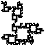
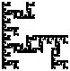
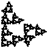
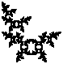
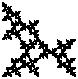
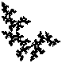
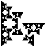
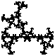

We consider a few of fractals that can be decomposed into three pieces, each a copy of the whole scaled by 1/2, hence fractals that are related to the gasket.
Here we allow the pieces to be rotated (by a multiple of 90 deg) or reflected after being scaled by 1/2.
Surprisingly, this produces a variety of shapes having different topological properties (How many separate pieces comprise the shape, does the shape contain any loops?)
Here are examples of four distinct topological types of gasket relatives.
|
A dendrite example: only one piece and containing no loops |  | A Cantor set example: no part is connected to any other part |
|  | A multiply-connected example: loops, smaller loops, still smaller loops, and so on | A hybrid example: infinitely many pieces, but each piece consists of points connected to the rest of the piece |
Here are a few more examples. Click on the small picture for a larger version.
|  |  |  |  |  |  |
Each of these shapes consists of three copies of itself, all scaled by a factor of 1/2, so all are relatives of the gasket.
And yet, these are not the most peculiar relatives of the gasket.
Return to More Examples.